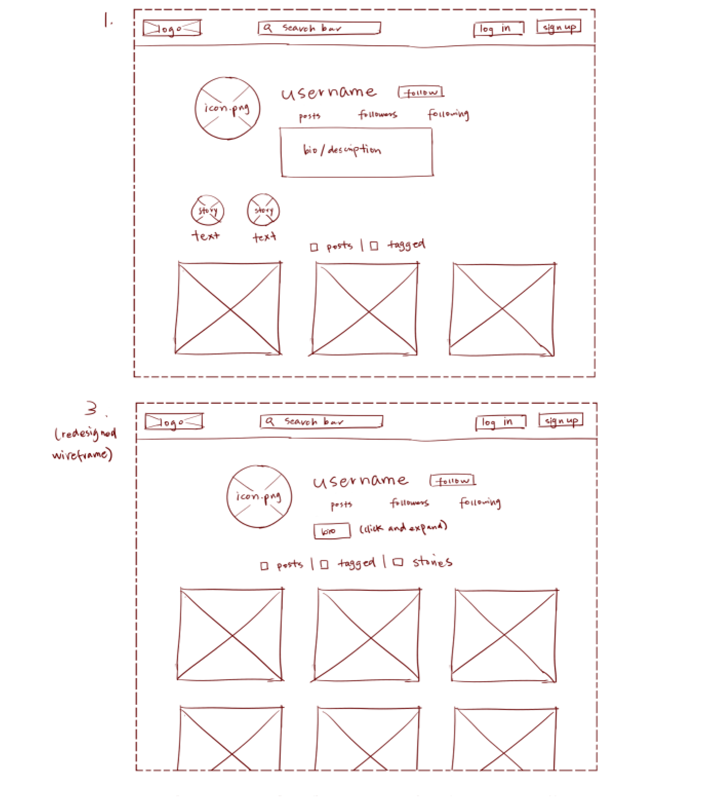

-
Using the favorite website you chose in homework 1, create a wireframe for one page of it using pen/paper, PowerPoint, or any your tool of choice. (use the 'img' tag!) Make sure to let us know what the name of your website is (Use the 'p' tag!)
 Dictionary.com
Dictionary.com -
Try to improve the website you've chosen, and create a redesigned wireframe of one page for the same website using the principles of visual hierarchy that you learned from the article.

-
What is the goal of the website? Who is it intended for? How does the design accomplish this? Write 2-3 sentences answering these questions. (Use the 'p' tag again!)
The goal of the website is to serve as an online dictionary. They understand that people use it mainly to look up words and so they have the page quite barren while leaving a search bar at the very top.
-
Write 2-3 sentences about what problems your redesign addressed, and how it solved them.
I felt that the website had too much white space, and that in order to promote some of the other features of the website, it needed to feel a little more cluttered. That's why I combined both features displayed on the page onto one section of the page, while leaving ads for down below.
NOTE: Make sure to include the wireframe images in the website and don't just put it in your assets folder!
Your wireframes should look something like this:
